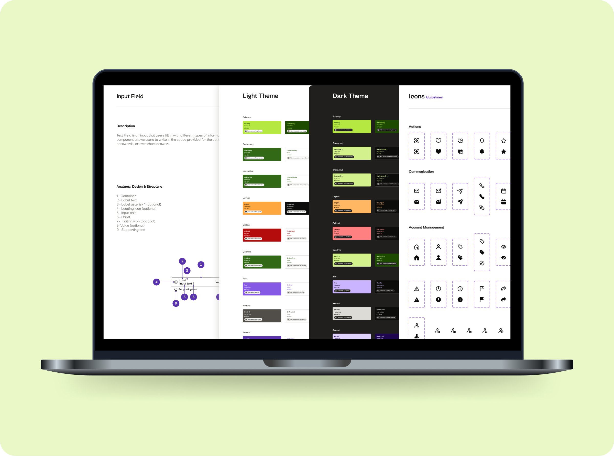
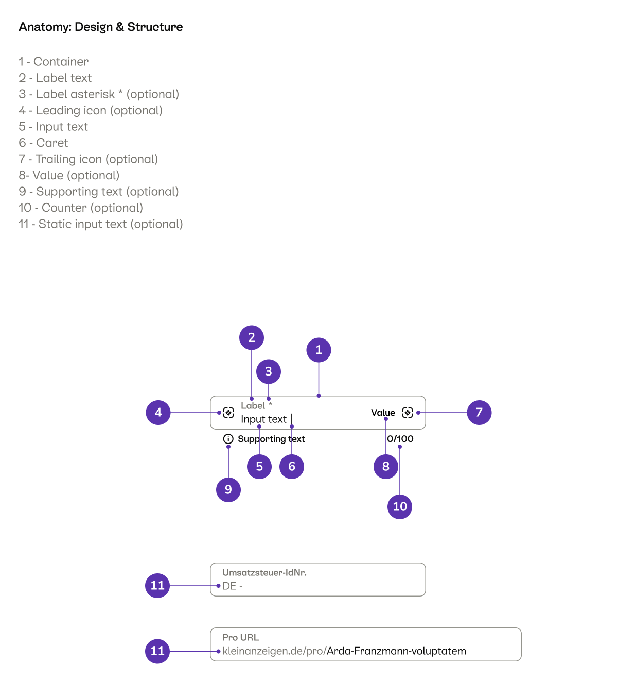
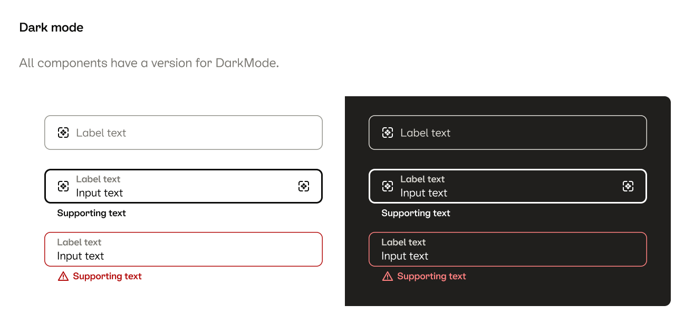

Token architecture
Restructured the token layer into semantic, tier-based naming that maps cleanly to both Figma variables and code. Reduced the ambiguity that caused designers and engineers to make different decisions from the same spec.
Scaling a multi-platform design system for millions of users.
Design systems are not just UI libraries - they are a way to align teams, reduce friction, and improve how product decisions scale. At Kleinanzeigen, I work on the design system as the foundation for consistent, scalable, accessible product experiences across Android, iOS, and web.

When I joined, the system had grown organically alongside the product. Components existed in multiple versions across platforms, token naming was inconsistent, dark mode coverage was incomplete, and there was no clear model for how teams should contribute or when they should deviate. The result was predictable: designers made local fixes, engineers made local fixes, and the distance between the two grew.
I focus on three things in parallel: evolving the component library, improving the token architecture, and building the processes that keep the system healthy after each release.
Restructured the token layer into semantic, tier-based naming that maps cleanly to both Figma variables and code. Reduced the ambiguity that caused designers and engineers to make different decisions from the same spec.
Every component now ships with full anatomy documentation, state coverage, dark mode specs, accessibility requirements, and explicit do/don't guidance. The goal is that an engineer should be able to implement from the spec without a follow-up meeting.

Embedded both as first-class requirements in the component contribution process, not post-hoc additions. Each component specifies its color contract in both modes and its target WCAG level.

Built a lightweight process for product teams to propose, review, and graduate components into the system, reducing the bottleneck on the core system team.
Run regular syncs with front-end leads to close gaps between Figma spec and implementation, and maintain a shared decision log for non-obvious choices.
The hardest part of design systems work is not designing the components - it's designing the system around the system: the naming conventions, the decision-making process, the documentation culture, the way you handle disagreement between platform teams. The components are visible. The infrastructure that keeps them consistent is not, and that's where most of the long-term leverage lives.